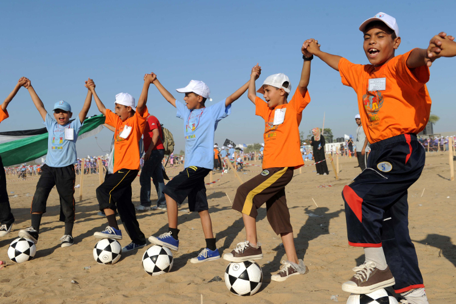

Defying intimidation when unknown assailants attacked their summer camp run by the United Nations in 2011, children in Gaza broke a total of four Guinness World Records as they participated in events organized by the United Nations Relief and Works Agency for Palestine Refugees in the Near East (UNRWA). Since 1950, UNRWA has been providing assistance and protection to nearly 5.2 million registered Palestine refugees through health care, education, social services, infrastructure and emergency support, including in times of armed conflict.
Pictured Children set one of four new records in 2011, dribbling the largest number of soccer balls simultaneously. UN Photo/Shareef Sarhan
